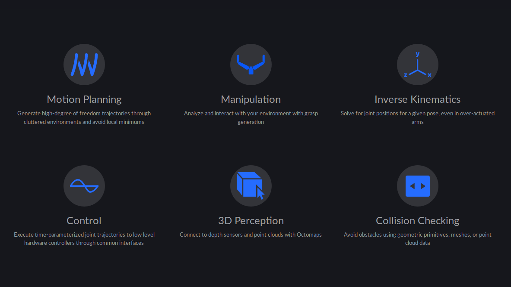
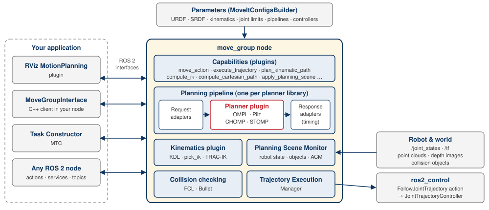
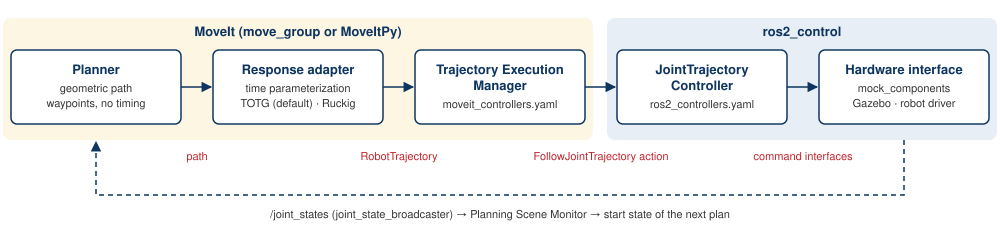

layout: true <div class="header"><img src="../../../common/logo/ros_industrial_logo.png" alt="ROS-Industrial" style="background-color:transparent"/></div> <div class="footer"><img src="https://www.ipa.fraunhofer.de/content/dam/ipa/ipa.svg" /><p>© Fraunhofer IPA</p></div> <div class="triangle"></div> --- class: center, middle name: main_title # MOVEIT 2 – OVERVIEW ### What MoveIt does, how it works, and where it stops ROS 2 Jazzy --- ## Agenda 1. What MoveIt is and what it enables 2. Architecture and key concepts 3. From a plan to a robot motion: execution and ros2_control 4. Keeping the world up to date: Planning Scene Monitor and perception 5. Real-time jogging: MoveIt Servo 6. Mock, simulated and real hardware 7. Limitations #### The MoveIt series | # | Deck | Content | |---|------|---------| | 1 | **Overview** | this deck | | 2 | Configuration & launch | Setup Assistant, config package, `MoveItConfigsBuilder` | | 3 | Programming APIs | MoveGroupInterface vs MoveItPy | | 4 | Motion planning in practice | planners, IK, constraints, scene, ACM | | 5 | Task Constructor | multi-step tasks such as pick and place | --- ## What is MoveIt? - Open-source **motion planning framework** for robot arms (BSD-3), maintained by PickNik Robotics and the community - You give a **goal** (pose, joint values, named state) → MoveIt returns and executes a **collision-free, time-parameterized joint trajectory** - **Robot-agnostic**: a robot is described by URDF + SRDF + a few YAML files, generated by the Setup Assistant - **Plugin-based**: planners, IK solvers, collision checkers and controller managers can be swapped through configuration - Built on ROS 2: TF, `ros2_control`, RViz, perception topics - Used on 150+ robot models: UR, Franka, Yaskawa/Motoman, ABB, KUKA, Kinova, AgileX Piper, … .note[MoveIt 2 = MoveIt for ROS 2. This training targets **Jazzy**; most examples also run on Humble with small API differences.<br/> Documentation: [moveit.picknik.ai](https://moveit.picknik.ai) · Source: [github.com/moveit/moveit2](https://github.com/moveit/moveit2)] --- ## What MoveIt enables <p></p> --- ## Architecture: the `move_group` node <p></p> .note[`move_group` is a node that hosts all MoveIt components. Clients talk to it over ROS 2 interfaces. MoveItPy and MoveItCpp run the same components inside your own process (deck 3).] --- ## Key concepts | Concept | What it is | |---------|-----------| | **Robot model** | URDF (links, joints, geometry, limits) + SRDF (semantics: groups, poses, end effectors) | | **Planning group** | The joints MoveIt plans for, e.g. `ur_manipulator`, `left_arm`, `both_arms` | | **Robot state** | Joint values plus the link poses computed from them (forward kinematics) | | **Planning scene** | Robot state + world collision objects + attached objects + ACM | | **ACM** | Allowed Collision Matrix: pairs of links/objects that are *not* checked for collision | | **Planning pipeline** | Request adapters → **planner plugin** → response adapters (e.g. time parameterization) | | **Kinematics plugin** | IK solver per group, configured in `kinematics.yaml` | | **Trajectory execution** | Sends trajectories to controllers and monitors their execution | | **Capability** | A `move_group` plugin offering a ROS interface (`move_action`, `compute_ik`, …) | --- class: dense ## Ecosystem: plugins and tools .cols[ .fifty[ #### Plugins (chosen per robot in YAML) - **Planners** - OMPL: sampling-based (RRTConnect, PRM, …) - Pilz industrial: PTP, LIN, CIRC - CHOMP, STOMP: trajectory optimization - **IK solvers**: KDL (default), pick_ik, TRAC-IK, IKFast - **Collision checking**: FCL (default), Bullet - **Controller managers**: `moveit_simple_controller_manager`, `moveit_ros_control_interface` ] .fifty[ #### Tools around the core - **Setup Assistant**: generates the config package - **RViz MotionPlanning plugin**: interactive planning - **APIs**: MoveGroupInterface (C++), MoveItPy (Python), MoveItCpp (C++) - **MoveIt Servo**: real-time jogging and teleoperation - **MoveIt Task Constructor**: multi-step tasks (pick and place) - **Hybrid planning**: global plus local planner (experimental) - **warehouse_ros**: stores robot states and scenes ] ] --- class: dense ## From a plan to a robot motion <p></p> - A planner only returns a **path**. A response adapter adds the timing: `AddTimeOptimalParameterization` (TOTG, default) or `AddRuckigTrajectorySmoothing` (jerk-limited) - The timing uses the limits in `joint_limits.yaml` (velocity **and acceleration**) × `max_velocity_scaling_factor` / `max_acceleration_scaling_factor` - The Trajectory Execution Manager picks the controller(s) from `moveit_controllers.yaml` and sends `FollowJointTrajectory` goals - MoveIt never talks to the hardware: `ros2_control` controllers execute the trajectory --- class: dense ## Planning Scene Monitor and perception .cols[ .fifty[ The **Planning Scene Monitor** keeps a live copy of the scene: - `/joint_states` → current robot state - TF → robot pose in the world, sensor frames - `/collision_object`, `/attached_collision_object`, `/planning_scene` topics and the `apply_planning_scene` service - Depth sensors → **Octomap** (voxel occupancy grid), with the robot itself filtered out of the point cloud Every plan uses a **snapshot** of the scene at request time.<br/> The scene is published on `/monitored_planning_scene` (RViz uses it). ] .fifty[ ```yaml # config/sensors_3d.yaml sensors: - wrist_camera wrist_camera: sensor_plugin: occupancy_map_monitor/PointCloudOctomapUpdater point_cloud_topic: /camera/depth/points max_range: 2.0 point_subsample: 1 padding_offset: 0.05 padding_scale: 1.0 max_update_rate: 1.0 filtered_cloud_topic: filtered_cloud ``` Also set `octomap_frame` and `octomap_resolution` on `move_group`.<br/> `DepthImageOctomapUpdater` works on depth images instead. ] ] --- class: dense ## MoveIt Servo: real-time jogging .cols[ .sixty[ - **Streams commands** to a controller at a fixed rate instead of planning a full trajectory - Inputs (topics of `servo_node`) - `~/delta_twist_cmds`: Cartesian velocity (`TwistStamped`) - `~/delta_joint_cmds`: joint velocities (`JointJog`) - `~/pose_target_cmds`: target pose (`PoseStamped`) - switch the mode with the `~/switch_command_type` service - Every cycle: inverse Jacobian, joint limits, **singularity** and **collision** checks that slow down and stop the robot - Output: `JointTrajectory` to a JTC, or `Float64MultiArray` to a forward position/velocity controller - Also usable as a C++ library (`moveit_servo::Servo`) ] .forty[ #### Use cases - Teleoperation: joystick, SpaceMouse - Visual servoing - Fine approach before contact - Hand guiding / haptics #### Try it ```bash ros2 launch moveit_servo demo_ros_api.launch.py # UR robots ros2 launch ur_moveit_config ur_moveit.launch.py \ ur_type:=ur5e launch_servo:=true ``` ] ] --- class: dense ## Mock, simulated and real hardware The MoveIt configuration stays the same. Only the `ros2_control` **hardware plugin** in the URDF changes. | Mode | Hardware plugin | Use | |------|-----------------|-----| | Mock | `mock_components/GenericSystem` | Develop the logic; commands are copied to states (perfect tracking) | | Simulation | `gz_ros2_control/GazeboSimSystem` | Dynamics, sensors, contacts | | Real robot | vendor driver: `ur_robot_driver`, `franka_hardware`, … | Production | Workshop setup: one container per robot with the bringup (mock or real), one generic `move_group`: ```bash docker compose up agx_piper_h_mock # robot repository: ros2_control, no MoveIt ROBOT_DESCRIPTIONS_IMAGE=agx_piper_h_descriptions:jazzy \ docker compose --profile rviz up # move_group_server: move_group + RViz ``` Moving to the real robot: check the controller names (UR uses `scaled_joint_trajectory_controller`), the execution tolerances (`trajectory_execution.allowed_start_tolerance`, ...) and start with low velocity scaling. --- ## Limitations (1/2) - **Not a controller** - No force or impedance control and no contact-rich tasks (insertion, polishing) - Use dedicated `ros2_control` controllers for those - **No real-time guarantees for planning** - A plan takes from a few ms to seconds, depending on the planner and the scene - MoveIt Servo is the real-time-oriented part - **Plan, then execute (open loop)** - The scene is a snapshot taken at planning time - Obstacles that move after planning are not avoided; execution can only be stopped and replanned - **Sampling-based planners (OMPL, default)** - Random: each run gives a different path, which is not optimal and sometimes looks odd - Mitigate with constraints, Pilz for predictable motions, STOMP/CHOMP for smoothing, or more planning time --- ## Limitations (2/2) - **IK is numerical and local** (KDL by default) - Returns one solution that depends on the seed state, can fail near joint limits and singularities - Redundancy (7-DoF arms) is not optimized unless the solver is configured for it (pick_ik) - **Cartesian paths can be partial**: always check the returned `fraction` - **Path constraints** (keep a cup upright) slow OMPL down a lot and need tuning - **No task planning or grasp synthesis** in the core: use MoveIt Task Constructor and external grasp planners - **Perception**: the Octomap is coarse, needs tuning (resolution, self-filtering) and recognizes no objects - **Multiple arms**: coordinated motion only by planning a combined group (`both_arms`) - **Configuration overhead**: many YAML files, and parameters and APIs change between ROS distributions --- ## Summary and references - MoveIt turns goals into **collision-free, time-parameterized trajectories** and executes them through `ros2_control` - Everything is a **plugin** configured in the `moveit_config` package - The **Planning Scene** is MoveIt's view of the world; keep it up to date - Know the limits: open-loop planning, no force control, random planners, local IK #### Next decks Configuration & launch → Programming APIs → Motion planning in practice → Task Constructor #### References - Runnable examples of this series (C++, Python, MTC; UR5e, FR3, GP50, Piper): [github.com/ROS-Industrial-Session-Common/moveit_examples](https://github.com/ROS-Industrial-Session-Common/moveit_examples) - Documentation and tutorials: [moveit.picknik.ai](https://moveit.picknik.ai) - Source: [github.com/moveit/moveit2](https://github.com/moveit/moveit2), [moveit2_tutorials](https://github.com/moveit/moveit2_tutorials) - Community: MoveIt Discord (link on the documentation site), [ROS Discourse](https://discourse.ros.org)